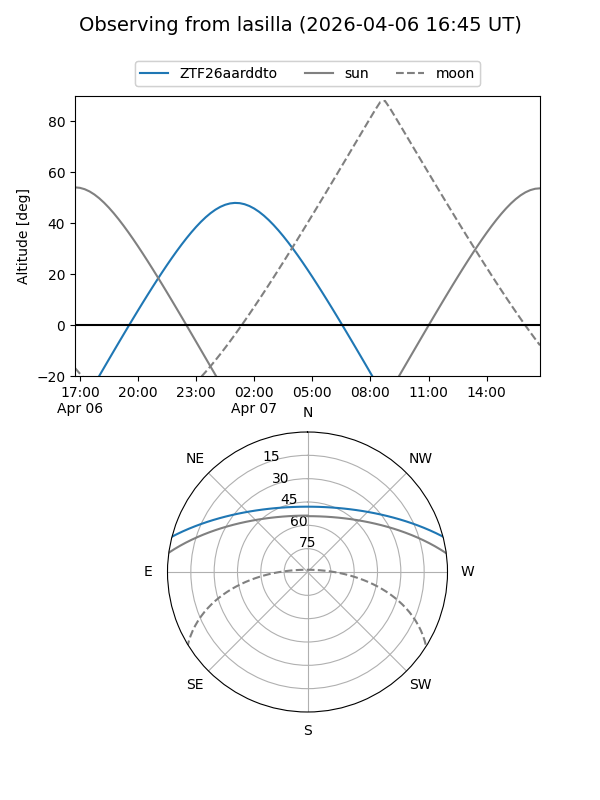
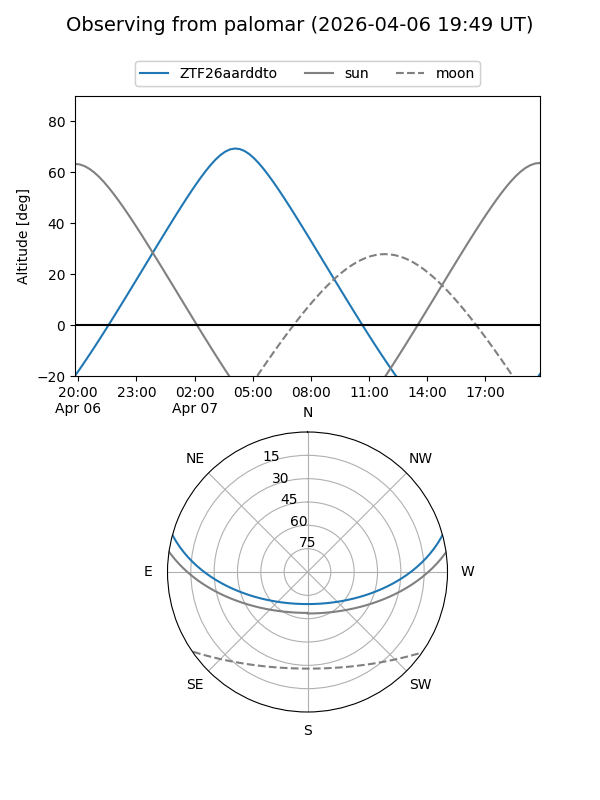

ZTF26aarddto
Target ZTF26aarddto at 2026-04-07 06:22
Aliases and brokers:
FINK: link
Lasair: link
ALeRCE: link
alt names
ZTF26aarddto (ztf,fink_ztf)
Coordinates:
equatorial (ra, dec) = 139.9303,+12.84666
equatorial (HMS+DMS) = 09:19:43.26,+12:50:47.97
galactic (l, b) = (218.0814,+38.64121)
Flags:
Photometry:
last ztfg=19.67
1 ztfg detections
Lightcurve
Visibility


Additional plots